FIVE PEOPLE, FOUR HOMES, ONE INCREDIBLE YEAR
A family adventure across North and Central America
Starring Ruth, Raph, Izzy, Papa Beep, and Mama Mimi
Chapter 1: The Five-Seat Question
The whole adventure began with a question that nobody could answer.
"How many pairs of shoes do we actually need?"
Papa stood in the hallway holding six different shoes.
Not six pairs.
Six shoes.
There was a running shoe belonging to Ruth, a soccer cleat belonging to Raph, one of Izzy's muddy sneakers, one of Mama's sandals, and two shoes that nobody wanted to claim.
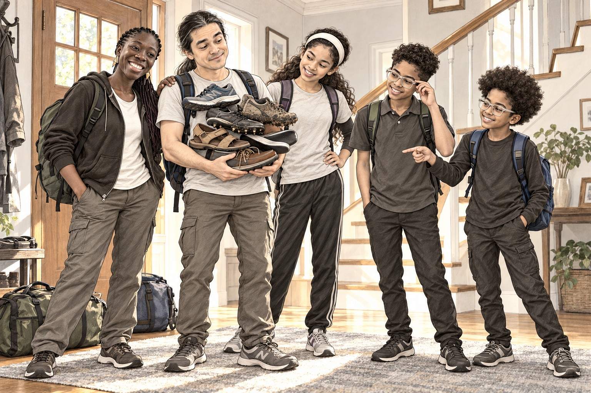
"We're going to be away for a year," said Ruth, who was thirteen and believed that proper planning could prevent most disasters.
"Exactly," Papa replied. "So why do we own approximately nine hundred shoes?"
"Because there are five of us," said Raph.
"That's only ten feet," Izzy pointed out.
"Thank you," said Papa. "Finally, somebody understands the mathematics."
A month earlier, the family had made an extraordinary decision.
They were going to spend an entire year travelling throughout North and Central America.
No ordinary school bus in the morning.
No rushing between quite so many appointments.
No staying in the same house every night.
Instead, they would explore forests, mountains, deserts, beaches, ancient cities, and unfamiliar towns.
They would learn together, work together, and discover whether five people could live in a space smaller than their kitchen.
Mama had described the plan as "a wonderful opportunity for the family."
Papa had described it as "an interesting engineering problem."
Ruth had described it as "exciting, provided I get some privacy."
Raph wanted to know whether they would find soccer fields in every country.
Izzy wanted to know whether a camper could have a hockey rink.
"No," Papa had said.
"What about a very small hockey rink?"
"Still no."
"What about a Lego hockey rink?"
Papa considered this.
"That might be possible."
And that was how the first camper acquired a Lego hockey rink before it even had a working kitchen.
Their starting point was Papa's Ford Transit, a tall, extended van that had already travelled enough kilometres to deserve its own passport.
They planned to turn it into a Class B camper.
Papa would design storage spaces, folding furniture, electrical systems, and places for everyone's equipment. Qualified professionals would help with the safety-critical work, including proper belted travel seats for all five passengers.
Mama would help plan the living arrangements, schooling materials, meals, and travel schedule.
The kids would contribute ideas.
This was a dangerous invitation.
Izzy drew a camper with a rooftop swimming pool.
Raph designed a fold-out soccer stadium.
Ruth drew a quiet reading loft with a window overlooking the ocean.
Papa looked at the drawings.
"Wonderful," he said. "Now we need a van approximately the size of a shopping mall."
They compromised.
The real camper would contain five safe travelling seats, beds that could be assembled at night, a tiny kitchen, storage cabinets, a table, and a compact bathroom arrangement.
A small tent would provide additional sleeping and relaxing space at campsites where tents were permitted.
The family would also stay in cabins, cottages, apartments, and short-term rentals whenever they needed extra room.
There would be a place for schoolbooks, Ruth's running gear, Raph's soccer ball, Izzy's hockey equipment, two musical instruments, a camera, and a carefully selected collection of Lego.
"Carefully selected?" Izzy repeated.
"Very carefully," Papa answered.
"How carefully?"
"One box."
Izzy looked horrified.
"One enormous box?"
"One regular box."
"I need to speak to my lawyer."
"Who's your lawyer?"
"Raph."
Raph looked up from his soccer notebook.
"I charge two Lego minifigures per hour."
Mama laughed.
Then she spread a large map across the dining table.
Their proposed route began near Ottawa and travelled west across Canada. They would explore the Rocky Mountains and the Pacific Coast, travel through the western United States, continue south into Mexico, and eventually reach Central America.
They would return north the following spring.
Somewhere along the journey, they hoped to try a larger Class C motorhome.
Later, they wanted to experience a Class A RV.
And for several weeks, they would trade roads for water aboard a rented sailboat.
Ruth traced a finger along the coastline.
"That's really far."
"It is," Mama said.
"What if we don't like travelling?"
"Then we'll change how we're doing it."
"What if we miss home?"
"We probably will."
"What if we get tired of each other?"
Papa looked around at everyone.
"I think there's a very strong possibility of that."
"Papa!" Izzy protested.
"What? I'm including all available evidence."
Mama smiled.
"The point isn't that every day will be wonderful. The point is that we'll figure things out together."
Ruth considered that.
Then she took a blue marker and drew five tiny stars beside Ottawa.
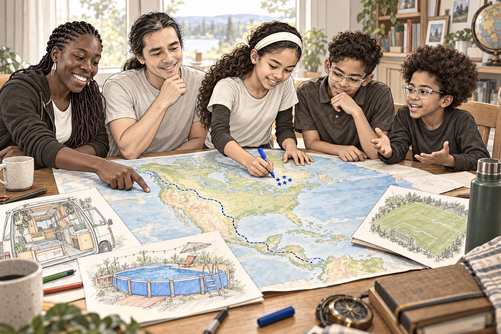
One for each of them.
Underneath, she wrote:
FIVE PEOPLE. ONE YEAR. UNKNOWN NUMBER OF ADVENTURES.
Izzy added:
UNLIMITED PANCAKES.
Papa crossed that out.
"Limited pancakes."
Izzy crossed out limited.
Their first disagreement had officially begun.
And they hadn't even left the driveway.
Chapter 2: The Camper That Had Elbows
Converting the van took longer than expected.
Much longer.
Papa had imagined a tidy sequence of tasks.
First, insulation.
Then electrical wiring.
Then furniture.
Then plumbing.
Then everything would fit perfectly.
Instead, there were mornings when he spent two hours trying to install a cabinet, only to discover that the van wall wasn't straight.
"Why isn't it straight?" asked Izzy.
"Because vans aren't rectangular boxes."
"Why not?"
"Because the people who design vans enjoy making life interesting for people who build cabinets."
One afternoon, Papa was lying underneath a half-built bench when Raph appeared with a soccer ball.
"Can you play?"
"Not right now."
"Later?"
"Hopefully."
"How much later?"
Papa stared at the underside of the bench.
He had already spent most of the morning feeling frustrated. A small electrical problem had interrupted his work, and the list of unfinished tasks seemed to grow every time he looked at it.
"I don't know, Raph."
Raph noticed something in his voice.
"Oh. Okay."
He started to leave.
Then Papa slid out from underneath the bench.
"Actually, let's go for fifteen minutes."
"But you're working."
"Yes. And right now, my work isn't going particularly well."
They took the ball outside.
Raph demonstrated an elaborate move involving a fake shot, a quick turn, and what he claimed was an unstoppable finish.
Papa blocked the ball with his foot.
"Stopped."
"That wasn't the real version."
"Of course not."
They played until both were breathing harder.
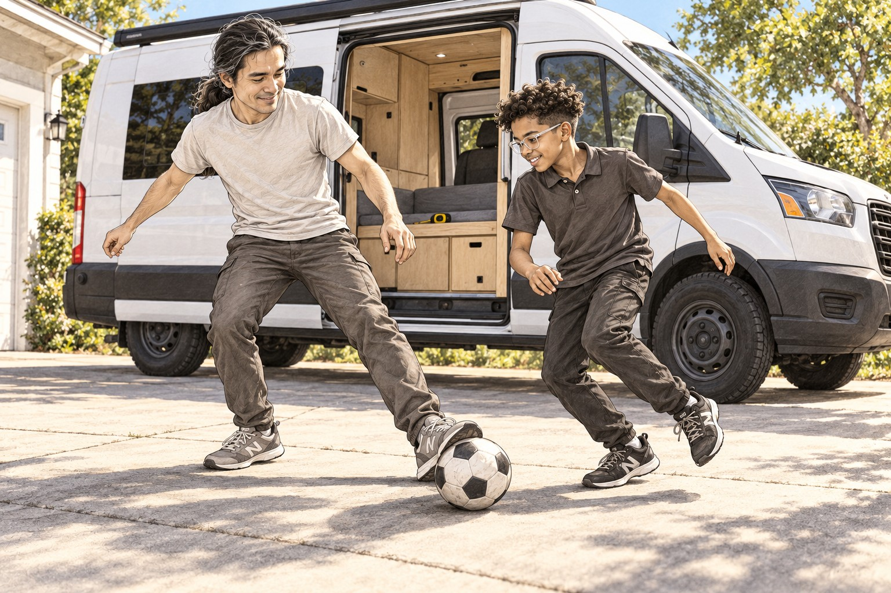
When they returned to the van, Papa noticed something strange.
The cabinet problem hadn't disappeared.
But he didn't feel quite as trapped by it.
Meanwhile, Mama and Ruth were sorting school materials.
Ruth wanted notebooks, books, art supplies, and enough room to write without someone constantly asking what she was writing.
Mama wanted everything organized so they could find what they needed.
Izzy wanted to bring seventeen unfinished Lego projects.
They eventually agreed on a storage system.
Each child would have a personal container that nobody else could rearrange without permission.
There would also be shared storage for sports equipment, school supplies, tools, and games.
Papa installed little reading lights.
Ruth tested hers with a novel.
Raph tested his with a soccer magazine.
Izzy tested his by shining it into Raph's face.
"Excellent," Izzy announced. "Very bright."
"IZZY!"
"Testing!"
Their first overnight trip took place at a campground not far from home.
The weather forecast promised sunshine.
The weather delivered rain.
Not normal rain.
Rain that seemed determined to wash the entire campground into a nearby lake.
The family had just finished supper when the storm arrived.
Within minutes, everyone rushed to gather shoes, chairs, books, and anything else that wasn't tied down.
Then five wet people squeezed into the camper.
Papa stood near the door.
Mama stood beside the kitchen.
Ruth sat on a bed.
Raph tried to move around her.
Izzy turned to retrieve his Kobo.
His elbow hit Raph.
Raph's elbow hit Ruth.
Ruth's foot knocked over a bag.
The bag fell against Papa.
Papa stepped backward into the door.
"OUCH!"
There was silence.
Then Mama said, "I think our camper has too many elbows."
Everyone burst out laughing.
Everyone except Papa.
He rubbed his shoulder.
Then he began laughing too.
Later, after the rain settled into a softer rhythm, they sat together with mugs of hot chocolate.
Mama brought out a small notebook.
"I have a suggestion," she said.
"Another storage system?" asked Ruth.
"No. A family agreement."
They called it the Five-Person Agreement.
It had four rules.
One: Anyone can ask for quiet or personal space.
Two: Being upset is allowed. Being cruel is not.
Three: Nobody has to love every activity.
Four: When things go badly, we try again.
Raph added a fifth rule.
"No soccer balls near the dishes."
Izzy added a sixth.
"No blaming the goalkeeper."
Papa added a seventh.
"The driver gets the final decision about whether a road is safe."
Mama read the list.
"That's actually a pretty good start."
Outside, rain drummed against the roof.
Inside, the air smelled of wet socks and hot chocolate.
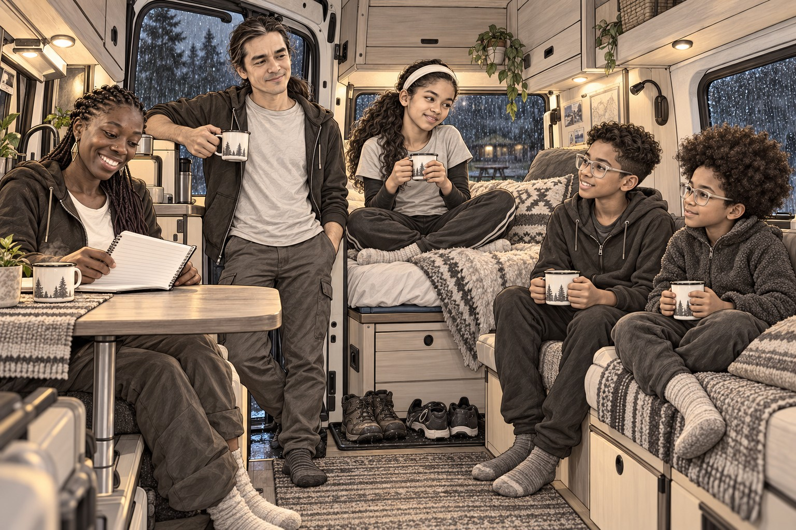
It wasn't luxurious.
It wasn't spacious.
But when Papa switched off the main lights, five little sleeping areas glowed softly.
For the first time, the tiny camper felt like a home.
A home with far too many elbows.
Chapter 3: The Lake That Became a Classroom
They left Ottawa in May.
The departure involved several hugs, three last-minute searches for missing belongings, and one dramatic announcement from Izzy.
"I HAVE FORGOTTEN SOMETHING IMPORTANT!"
Everyone stopped.
"What?" asked Mama.
"My favourite Lego astronaut."
Papa looked at him.
"Where is it?"
"In my pocket."
They continued.
Their first major adventure took them through Ontario's forests and lakes.
They spent several nights near Algonquin Provincial Park, exploring trails lined with tall pines, mossy rocks, and ponds where frogs made an astonishing amount of noise.
One morning, Mama announced that school would take place outside.
"Excellent," said Raph. "No desks."
"Still mathematics," Mama replied.
"Less excellent."
Their lesson began beside the lake.
Papa placed a measuring tape, two sticks, and a notebook on a picnic table.
"Today's challenge: estimate how tall that tree is without climbing it."
"Easy," said Izzy. "Very tall."
"Technically correct."
Ruth suggested comparing shadows.
Raph remembered a similar problem from school.
Working together, they measured the shadow of a stick and compared it with the tree's shadow.
Papa explained how similar triangles could help them estimate the height.
Raph drew a diagram.
Ruth checked the measurements.
Izzy announced that the tree was exactly "a million squirrels tall."
Their calculation produced a more reasonable answer.
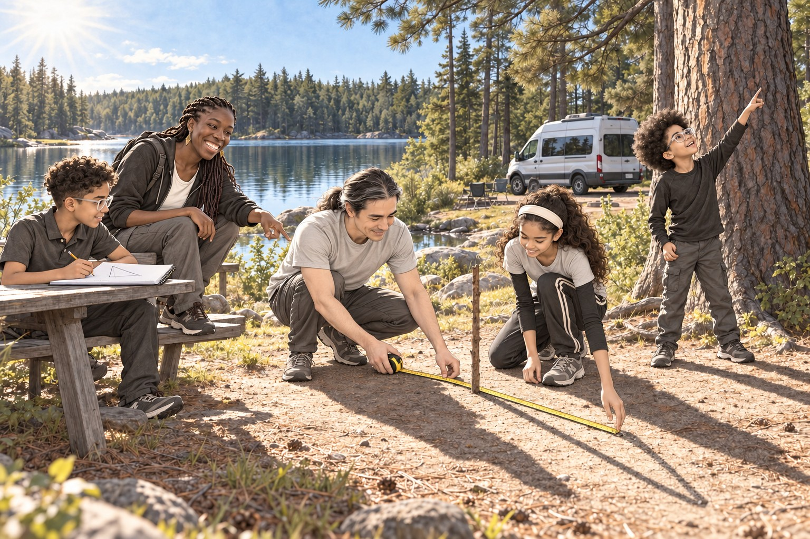
After lunch, they rented a canoe.
Mama paddled at the front.
Papa steered from the back.
The children rotated between the canoe and a second, guided outing arranged through the outfitter so everyone could participate safely.
Izzy was fascinated by how the paddle moved the boat.
"If I push the water backward, the canoe moves forward?"
"Exactly," Papa answered.
"So if I push the water sideways—"
The canoe turned.
"—we move sideways?"
"Or in circles," said Raph.
They learned quickly that canoeing required cooperation.
Paddling harder wasn't always better.
Sometimes the person at the back needed to steer while the person at the front maintained a steady rhythm.
Sometimes they needed to stop paddling entirely.
Sometimes they simply needed to listen.
They spotted a turtle warming itself on a log.
A loon called from across the lake.
Ruth photographed reflections of clouds drifting across the water.
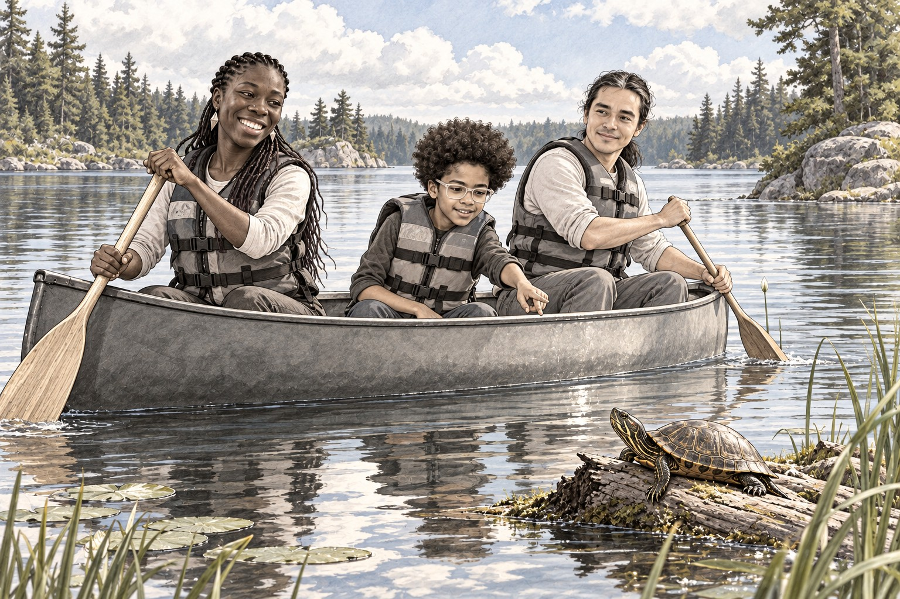
Izzy filmed a close-up of his paddle making tiny whirlpools.
Raph wanted to know whether they could have a canoe race.
Mama suggested they first learn how to travel in a straight line.
By the afternoon, the family had discovered something important.
The lake was a classroom, but it didn't behave like a classroom.
There were no bells.
No whiteboards.
No fixed desks.
Yet they had studied mathematics, physics, biology, geography, and teamwork without sitting inside a building.
That evening, Ruth began writing a story inspired by the turtle.
In her version, the turtle was a secret explorer who had travelled every lake in Canada.
Raph drew a map of imaginary waterways.
Izzy began designing a Lego canoe.
Papa reviewed the day's photographs.
Mama read beside the campfire.
For nearly an hour, nobody argued.
Then Raph asked whether turtles could play soccer.
Izzy said a turtle would make an excellent goalkeeper.
Ruth said the ball would probably roll past before the turtle noticed.
Raph disagreed.
Izzy defended the imaginary turtle.
Papa began explaining reaction times.
Mama closed her book.
"Are we seriously debating the athletic abilities of turtles?"
"Yes," said all four.
She shook her head.
Then smiled.
"Well, at least you're learning something."
Chapter 4: The Longest Straight Road in the Universe
By June, the family had reached the shores of Lake Superior.
The lake was so enormous that Izzy initially refused to believe it was a lake.
"That's an ocean."
"It's a lake," said Mama.
"Where's the other side?"
"Very far away."
"Then it's an ocean pretending to be a lake."
Papa explained that Lake Superior was the largest freshwater lake in the world by surface area.
Raph wanted to know how many soccer fields would fit inside it.
Papa looked at him.
"Several."
"How many?"
"More than I want to calculate before breakfast."
They spent days hiking along rocky shorelines, swimming only where conditions were safe, and exploring beaches scattered with smooth stones.
Ruth loved the open spaces.
She ran along a quiet trail with Mama, stopping occasionally to photograph wildflowers.
Raph and Izzy constructed miniature soccer stadiums in the sand.
Papa experimented with long-exposure photography as waves rolled over dark rocks.
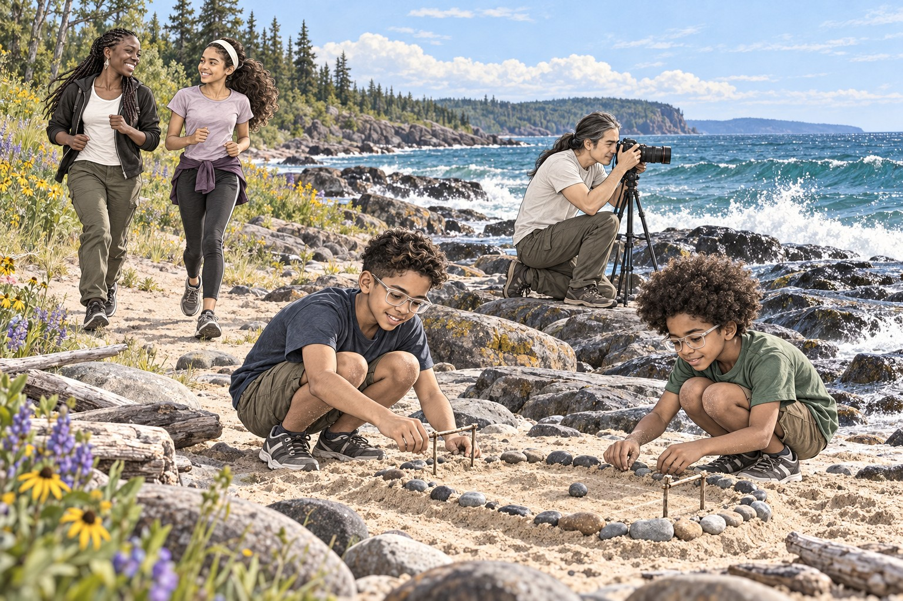
At night, they watched the stars appear.
It was easy to love travelling when the world looked like that.
But then came the prairies.
And driving.
Lots of driving.
The road stretched toward the horizon.
The horizon moved farther away.
The road continued.
After several hours, Raph said, "Are we almost there?"
"No," Papa answered.
Twenty minutes later, Izzy asked, "Are we almost there now?"
"No."
Ruth put on her headphones.
Another twenty minutes passed.
"How about now?"
Papa glanced in the rearview mirror.
"Do we need a lesson about the meaning of the word 'almost'?"
The children laughed.
Then they stopped laughing.
Then they became restless again.
Someone wanted a snack.
Someone else wanted the window open.
Someone had accidentally sat on somebody's drawing.
A disagreement began over the correct volume for music.
Mama finally turned around.
"Everyone. Quiet. For five minutes."
Five minutes lasted approximately eleven seconds.
"I have a question," Izzy whispered.
Papa pulled into a rest area.
The family climbed out.
Warm wind rolled across the grass.
There were no mountains.
No forests.
No giant waterfalls.
Just sky, fields, clouds, and a road that seemed to stretch forever.
Ruth began running.
Raph kicked his soccer ball across the grass.
Izzy chased after it.
Papa walked a short distance away and leaned against the camper.
Mama joined him.
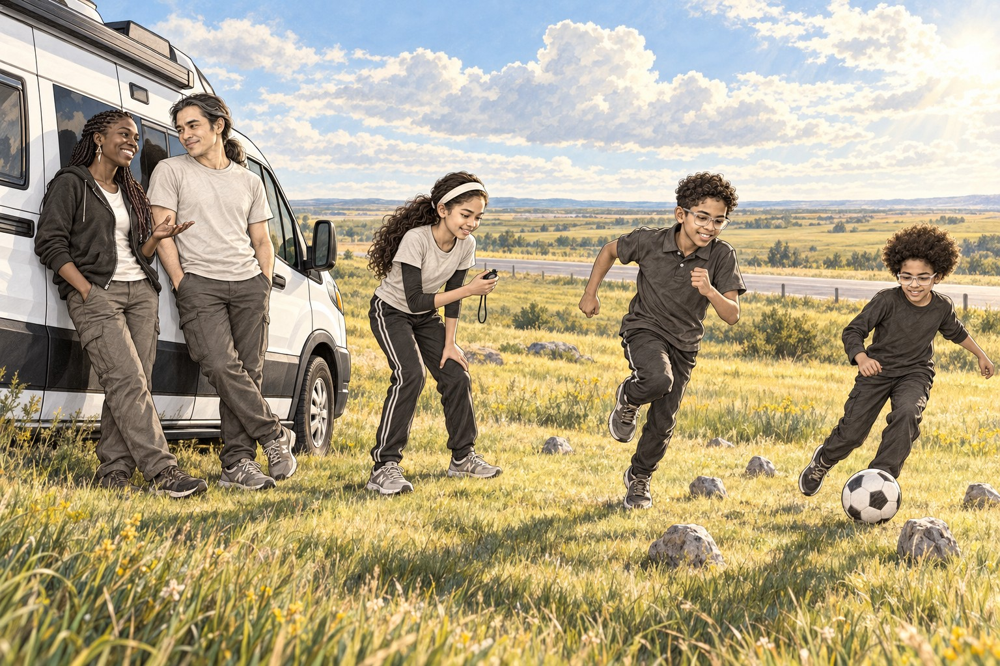
"Rough morning?"
"A bit."
"We don't have to drive so far every day."
"I know."
"Do you?"
Papa sighed.
He had spent weeks calculating distances, fuel costs, campground reservations, and arrival times.
Whenever they stopped early, part of him felt as though they were falling behind.
But behind what?
There wasn't a race.
There wasn't a finish line they needed to cross that afternoon.
There was only a year they had chosen to spend together.
Mama looked toward the children.
Ruth was now timing Raph's sprints.
Izzy had somehow turned the event into a soccer-and-hockey obstacle course.
Papa smiled.
"Maybe we stay somewhere nearby tonight."
They found a small campground beside a river.
The children biked around the grounds.
Mama prepared supper.
Papa repaired a loose cabinet latch.
Afterward, they sat outside and watched the sky turn orange.
Ruth brought out their map.
She drew a small circle around the place where they had stopped.
"What should I write?"
Papa considered the question.
"Best decision of the day?"
"What was it?"
"Not getting where we planned to go."
Ruth wrote that down.
The following morning, nobody asked whether they were almost there.
They were already somewhere worth being.
Chapter 5: A Little More Room
By the time they reached Alberta, the family had learned almost everything there was to know about living in a Class B camper.
They knew which cupboard squeaked.
They knew which drawer opened whenever Papa turned too sharply.
They knew that Izzy could sleep through a thunderstorm but would wake immediately if someone opened a bag of chips.
They knew Raph's soccer ball had a mysterious ability to appear underneath people's feet.
And they knew Ruth could produce an extremely disappointed expression without saying a single word.
One morning, the family sat around their tiny table eating breakfast.
Well, four people sat.
Papa stood because there wasn't room for everyone to sit comfortably.
Izzy reached for the cereal.
His elbow bumped Raph's glass.
Raph caught the glass.
His other hand knocked Ruth's notebook.
Ruth rescued the notebook.
The notebook landed in Papa's breakfast.
Papa looked down at the cereal-covered page.
"Interesting," he said. "Today we're learning about gravity."
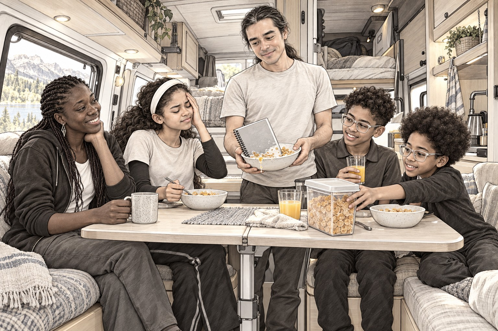
Ruth closed her eyes.
"Can we please live somewhere bigger?"
Nobody laughed.
Because everyone had been thinking the same thing.
A few days later, they visited an RV dealership near Calgary.
They had already discussed whether to keep the smaller camper for the entire journey or trade it for something larger.
Now they were seriously considering a Class C motorhome.
The first one they inspected had a kitchen, a bathroom, a dinette, and actual separate sleeping areas.
Izzy climbed onto a bunk.
Raph opened every cupboard.
Ruth discovered a corner where she could sit and read without blocking the doorway.
Mama stood in the kitchen.
Papa inspected the mechanical systems, the roof seals, the tires, and everything else that could become an expensive problem.
"Look!" Izzy shouted. "A couch!"
"Yes," said Mama.
"An actual couch!"
"We have a couch at home."
"But this couch MOVES!"
"Not by itself, hopefully," Papa replied.
The new motorhome wasn't perfect.
It was bigger and less convenient to park.
It used more fuel.
Some beautiful little roads would be too narrow for it.
And upgrading required giving up the Class B camper they had worked so hard to build.
Papa found that part unexpectedly difficult.
He stood beside the van that evening, looking at the cabinets.
He remembered installing them.
He remembered the electrical problems.
He remembered the rainy test trip.
He remembered Raph asking him to play soccer while he'd been trapped underneath a bench.
Mama came outside.
"Having second thoughts?"
"A few."
"We don't have to change."
"I know."
He ran his hand along the side of the van.
"I think I liked building it almost as much as travelling in it."
"That sounds like you."
He smiled.
"But we're not taking the trip to prove that my first design was perfect."
"No," Mama agreed.
"We're taking it to spend time together."
They worked through the costs and practical arrangements, then decided to trade the van for a carefully inspected used Class C.
A few days later, they transferred their belongings.
The children were given the important responsibility of making sure nothing was forgotten.
This went well until Izzy misplaced his Lego astronaut.
Again.
They eventually found it inside a saucepan.
"Why?" asked Ruth.
"Space travel," Izzy answered.
Nobody investigated further.
Their first night in the Class C felt extraordinary.
Ruth had her own bunk.
Raph had room to spread out a notebook.
Izzy had a little shelf for his Kobo and Lego creations.
Mama and Papa could prepare supper without performing complicated sideways movements.
There was even enough room for someone to walk through the camper while another person was sitting down.
"This is unbelievable," said Raph.
"It's basically a castle," Izzy agreed.
Papa looked around.
"A very small castle."
"A castle with a toilet," Izzy added.
"Most castles had toilets," Ruth said.
"Not as good as this one."
Mama laughed.
"How about we enjoy the extra room while it lasts?"
That evening, they named their new motorhome The Rolling Porch.
Ruth said the name made no sense.
Papa said that was exactly why it was perfect.
And for the first time in weeks, nobody accidentally elbowed anyone during supper.
They celebrated with pancakes.
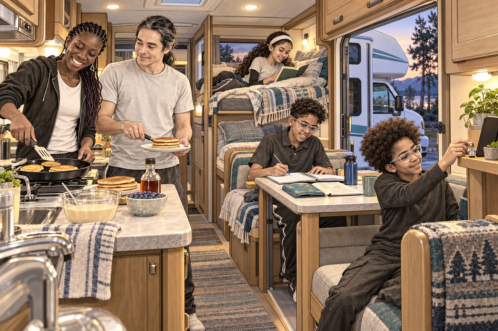
Chapter 6: The Mountain With a Pause Button
The Rocky Mountains looked impossible.
Their peaks rose above forests and valleys, some still streaked with snow even in summer.
Raph pressed his face close to the window.
"That's huge."
"Yes," said Papa.
"How tall?"
"Several thousand metres."
"How many soccer fields is that?"
Papa sighed.
"Why must everything be measured in soccer fields?"
"Because then I can understand it."
Izzy considered the mountain.
"You would need a very good goalkeeper."
They spent several weeks exploring the Canadian Rockies.
They hiked beside rivers so clear that stones on the bottom looked close enough to touch.
They rode bicycles along designated pathways.
They visited interpretive centres and learned how glaciers shape valleys, how avalanches move, and why animals need safe passages across highways.
Papa showed the children photographs of mountain roads built long before modern construction equipment existed.
Mama found books about the region's Indigenous peoples and the histories of communities that had lived there long before tourists arrived.
Some days were full of activity.
Other days were slower.
They learned to check trail conditions, weather, wildlife notices, and their own energy before setting out.
One morning, they planned a hike to a viewpoint.
Ruth was excited.
She wanted to reach the top before lunch.
Raph wanted to bring his soccer ball.
Mama convinced him that a mountain trail was not the ideal place for dribbling practice.
Izzy wanted to know whether there would be snow.
Papa packed snacks, water, extra clothing, and a camera.
The hike began beautifully.
Birds moved through the trees.
A stream rushed below the trail.
Sunlight shone across the mountains.
Then the path became steeper.
Ruth moved quickly.
Raph followed, determined not to fall behind.
Izzy began stopping to examine rocks.
Papa wanted photographs.
Mama wanted everyone to stay together.
Within half an hour, they had five different ideas about how the hike should proceed.
"Can we go faster?" Ruth asked.
"Can we stop?" said Izzy.
"Can I climb that rock?" asked Raph.
"No," said Mama.
"Can everybody stop moving for one photograph?" Papa requested.
"No!" said the children.
Eventually, Raph sat on a log.
"I'm tired."
Ruth looked back.
"We're almost there."
"You don't know that."
"The sign said two kilometres."
"That was ages ago."
Papa checked the map.
"We've gone about one kilometre."
Raph stared at him.
"That's not almost."
Ruth crossed her arms.
"We'll never finish if we keep stopping."
Something in her voice bothered Mama.
"Ruth, come sit with me for a minute."
"I don't need to sit."
"Then stand with me."
They stepped aside while Papa and the boys drank water.
"You really want to reach the top," Mama said.
"Yes."
"Why?"
"Because I want to do the whole hike."
"Okay."
"And because everybody keeps slowing down."
Mama listened.
Ruth looked away.
Then she added, more quietly, "Sometimes I wish we could do something at my speed."
Mama understood.
Ruth spent plenty of time helping the younger boys, waiting while somebody found a missing shoe, and adjusting plans so everyone could participate.
She loved her brothers.
But she didn't always want to organize her life around them.
"That's fair," Mama said.
Ruth seemed surprised.
"It is?"
"Of course. We can plan longer hikes for you. Sometimes just you and me, or you and Papa."
Ruth looked toward the trail.
"What about today?"
"Today we're hiking together."
Ruth sighed.
Then she smiled a little.
"I suppose that's different."
When they rejoined the boys, Papa suggested a new plan.
They would walk for another twenty minutes, then decide whether to continue.
Nobody had to reach the summit.
"Mountains don't disappear if you turn around," he said.
Izzy looked concerned.
"Do they ever disappear?"
"Geologically speaking, eventually."
"That's a terrible answer."
They continued.
Twenty minutes later, the trees opened onto a beautiful viewpoint.
They hadn't reached the original destination.
But they could see a turquoise lake far below, surrounded by mountains.
The family sat together and ate sandwiches.
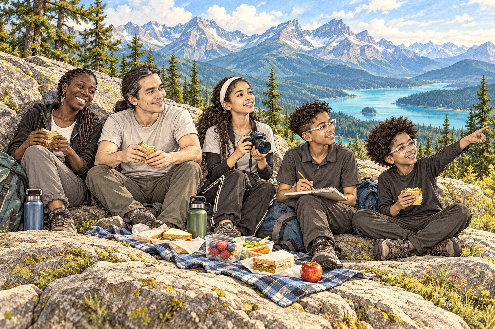
Raph drew the mountain profile in his notebook.
Izzy tried to count the visible peaks.
Ruth photographed the valley.
Papa took a picture of the five of them.
Mama leaned back against a rock.
"This is pretty good."
Ruth nodded.
Then she looked down the trail.
"I think next time I'd like to go farther."
"We'll plan it," Mama said.
On the way down, Raph invented a game where every switchback counted as a goal.
Izzy declared himself the official mountain goalkeeper.
Papa suggested that perhaps mountains should have a pause button.
Ruth laughed.
"They do."
"Where?"
She pointed toward the bench where they had stopped.
"Right there."
Chapter 7: The Ocean Has No Sidelines
By August, the family had reached British Columbia's Pacific Coast.
The first time they walked onto a beach facing the open Pacific Ocean, everyone stopped talking.
Waves rolled toward shore.
Gulls circled overhead.
The air smelled of salt and wet wood.
The beach stretched farther than Izzy could see.
He stood beside Raph.
"That's definitely an ocean."
"Correct," said Raph.
"Not like Lake Superior."
"Lake Superior is still a lake."
"Suspiciously."
They spent the morning exploring tide pools with a local naturalist.
The guide showed them anemones, mussels, tiny crabs, and sea stars.
The children learned that tide pools were delicate habitats, not collections of souvenirs.
They watched without removing animals or disturbing their hiding places.
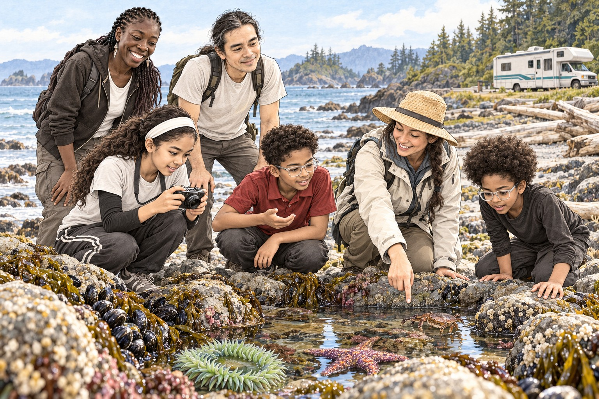
Ruth took photographs.
Raph asked questions about how creatures survived when the tide went out.
Izzy wanted to know whether a crab could save a hockey puck.
The guide paused.
"With its claws?"
"Yes."
"Probably not a very big puck."
Izzy considered this professional assessment carefully.
That afternoon, they rented bicycles and rode along a coastal pathway.
Ruth led the way.
Raph stayed close behind.
Izzy stopped every few minutes to inspect something.
Papa filmed short clips.
Mama reminded everyone to drink water.
By the time they returned to the campground, they were tired, sandy, and hungry.
It was the perfect evening to launch a new project.
RRIPM Radio.
"Welcome," Izzy announced into a microphone made from a wooden spoon, "to Ruth, Raph, Izzy, Papa and Mama Radio!"
"That's RRIPM," Raph explained.
"An improvement on RRIP Radio," said Ruth.
"Now featuring adult supervision," Papa added.
"And hopefully better organization," Mama said.
Their first episode was recorded on Papa's phone.
Ruth became the interviewer and producer.
Raph handled sports commentary.
Izzy provided sound effects and imaginary advertisements.
Papa hosted a segment called Things That Broke This Week.
Mama hosted Things Worth Noticing.
The first broadcast began with Izzy performing a dramatic introduction.
"THIS IS RRIPM RADIO, BROADCASTING LIVE FROM THE PACIFIC OCEAN!"
"We're not live," Ruth whispered.
"AND WE'RE NOT ACTUALLY IN THE OCEAN," Papa added.
Izzy continued.
"Today's breaking news: Raph has lost another soccer argument!"
"That is completely false!" Raph protested.
"More breaking news!"
Mama laughed so hard that Ruth had to stop recording.
They started again.
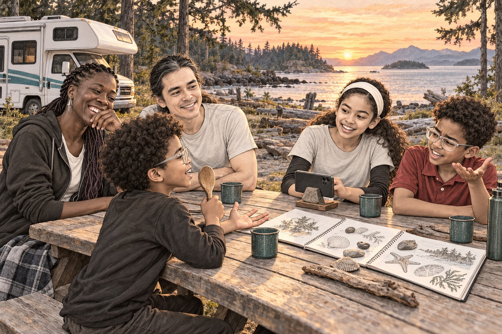
This time, Ruth interviewed each person about their favourite part of the day.
Raph talked about spotting a sea star.
Izzy described a crab that had moved sideways faster than expected.
Papa explained how waves shaped the coastline.
Mama remembered the moment everyone had stood quietly looking at the ocean.
When Ruth's turn came, she hesitated.
"Probably the bike ride."
"Why?" Mama asked.
"Because for a while, we were all doing the same thing."
Nobody interrupted.
Ruth continued.
"We weren't rushing. Nobody was waiting for somebody to finish something. We were just riding."
Papa looked at her.
He understood exactly what she meant.
Later that evening, they walked back to the beach.
The sky turned pink.
Izzy constructed a tiny Lego city on a picnic blanket.
Raph used driftwood to mark out a miniature soccer field in the sand.
Ruth photographed them from a distance.
Mama and Papa sat together listening to the waves.
After a while, Ruth came over.
"Can I show you something?"
She played a video she had made.
It began with the ocean.
Then a close-up of Raph's soccer field.
Then Izzy laughing while a wave chased him up the beach.
Then Papa trying to photograph a gull that refused to cooperate.
Then Mama sitting by the water.
Finally, it showed all five shadows stretching across the sand.
Ruth had added a title:
THE OCEAN HAS NO SIDELINES.
Papa watched it twice.
"That's beautiful."
Ruth smiled.
"Maybe we could make a movie about the whole trip."
"That would be wonderful," Mama said.
Izzy looked up from the Lego.
"Can there be explosions?"
"No," Ruth replied.
"Small explosions?"
"Still no."
"What about dramatic sound effects?"
Ruth considered that.
"Maybe."
Izzy raised both fists.
"RRIPM MOVIE STUDIOS!"
And just like that, the family had another project.
Chapter 8: The Giant House on Wheels
The United States brought new landscapes.
They explored forests in Washington, dramatic cliffs along the Oregon Coast, and towering redwoods in California.
In Oregon, Papa photographed waves crashing against rocks while Ruth filmed a short documentary about coastal erosion.
Raph discovered that he could start a soccer game almost anywhere.
Izzy discovered that American grocery stores sometimes contained cereal varieties he had never imagined.
Mama discovered that finding healthy snacks for five people could become a full-time occupation.
As they travelled south and then east, the landscape began changing.
The forests grew thinner.
The air grew drier.
Mountains became cliffs, mesas, and stretches of open desert.
By autumn, they reached the American Southwest.
And it was time for their next experiment.
A Class A motorhome.
They arranged a rental for several weeks, leaving their Class C safely stored while they tried living in a much larger vehicle.
The Class A looked enormous.
It had a broad windshield, a full kitchen, a bathroom, several sleeping areas, and a living room that actually resembled a living room.
Izzy stepped inside.
"WE HAVE A HOUSE!"
"We had a house before," Ruth said.
"BUT THIS ONE IS HUGE!"
Raph examined the seating.
"Could we play indoor soccer?"
"No," Papa answered immediately.
"What about soft-ball soccer?"
"No."
"What about—"
"Raph."
"Fine."
Mama opened the kitchen cupboards.
"Well, this is certainly convenient."
Papa stood behind the driver's seat.
The dashboard looked like something from an airplane.
There were gauges, switches, screens, and controls for systems he hadn't yet explored.
Izzy climbed into the passenger seat while they were parked.
"Papa, it's like driving a spaceship."
"An expensive spaceship."
"Can we go to Mars?"
"Not with these tires."
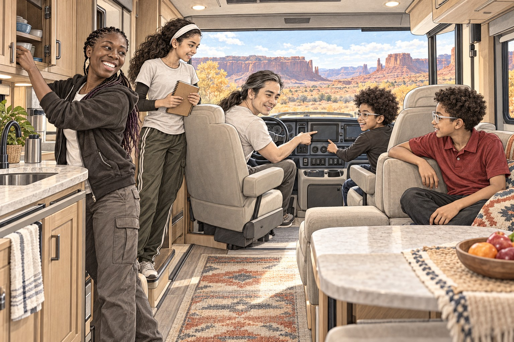
The Class A was comfortable.
It was also a completely different kind of travelling.
Papa needed to plan routes more carefully.
They couldn't squeeze into small parking lots.
They had to pay attention to height restrictions, road widths, and campground size limits.
Some places were simply too difficult to visit with such a large vehicle.
Instead, they parked at suitable RV resorts or campgrounds and explored the surrounding areas using bicycles, walking paths, local transportation, and occasional rented cars.
The larger living space was wonderful.
At least initially.
Ruth spread her books across a table.
Raph found a place for his piano keyboard and practised pieces he had been learning.
Izzy built a miniature Lego city complete with a fire station, soccer field, and extremely complicated railway.
Mama organized a proper school area.
Papa finally had room to work on his photographs and videos without balancing his computer on his knees.
"This," he announced one evening, "is luxury."
Everyone agreed.
Then, three days later, the family made an unfortunate discovery.
More space did not automatically mean fewer arguments.
Because although they had acquired additional square footage, they had also acquired additional surfaces on which to leave things.
Ruth left her art supplies on the dining table.
Raph left his soccer notebook on the couch.
Izzy's Lego spread across the floor.
Papa's tools occupied a corner of the kitchen counter.
Mama's school materials covered another table.
By the end of the week, the Class A looked as though a library, a workshop, a sports store, and a toy shop had collided.
Mama surveyed the damage.
"Everybody needs to clean up."
"In a minute," said Raph.
"I'm using that," said Ruth.
"I'm building something," said Izzy.
"These are organized," Papa said, pointing at his tools.
Mama looked at the tools.
There were screwdrivers, cables, a multimeter, two batteries, and something that appeared to be half a speaker.
"Organized?"
"According to a system."
"What system?"
Papa hesitated.
"A developing system."
Mama crossed her arms.
"Everybody. Now."
There was grumbling.
Lots of grumbling.
But eventually the family cleaned.
When the room was finished, they sat down together.
Izzy looked around.
"Wow. It's huge again."
Ruth laughed.
"Maybe we should clean more often."
Papa looked surprised.
"Did you just volunteer?"
"No."
"That's what I thought."
That night, they watched an old comedy together.
Everyone had a comfortable seat.
There was plenty of room for popcorn.
Nobody's elbow hit anyone else's face.
And for one magnificent evening, the giant house on wheels seemed absolutely perfect.
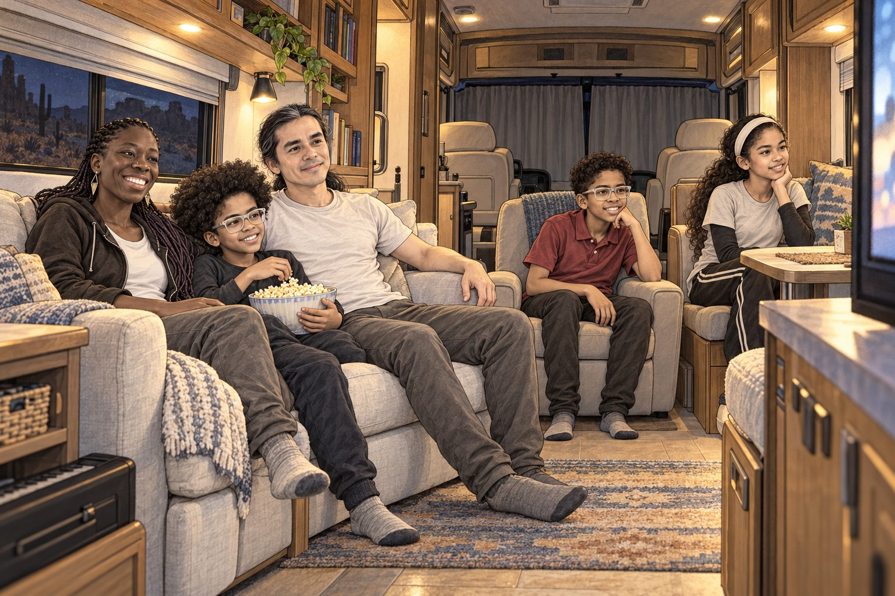
Chapter 9: The Day Everybody Needed a Door
The argument began on a Tuesday.
It was not a particularly important Tuesday.
Nobody had planned anything dramatic.
They were staying near a town in Arizona, and the morning was supposed to include schoolwork, laundry, grocery shopping, and a short afternoon hike.
Simple.
Except nothing felt simple.
Ruth was trying to write a story.
Raph was struggling with a reading assignment.
Izzy was constructing a Lego bridge underneath the table.
Papa was investigating an electrical warning light.
Mama was trying to organize the day.
"Ruth, have you finished your mathematics?"
"Almost."
"Raph, how's the reading going?"
"Fine."
"Are you sure?"
"Yes."
"Izzy, please put the Lego away until you've finished your work."
"I'm nearly finished the bridge."
"Not the bridge. Your schoolwork."
Papa looked up from his multimeter.
"Does anyone know where the small screwdriver went?"
Nobody answered.
He looked around again.
"The little one with the red handle."
"Papa," Mama said, "could you help Izzy with his assignment?"
"In a minute."
"You said that twenty minutes ago."
"I'm almost done."
Mama stopped moving.
Ruth recognized the expression on her face.
It was the expression adults developed when their patience was about to become very small.
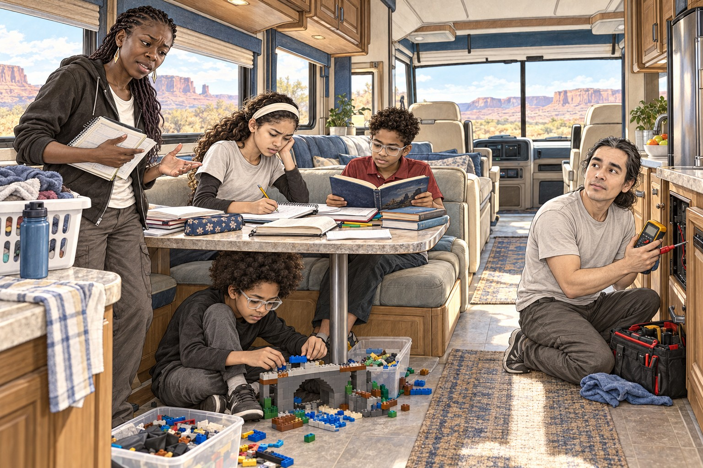
"Okay," Mama said. "Everybody stop."
Raph closed his book.
Izzy looked underneath the table.
Papa put down his screwdriver.
"I feel like I'm managing everything this morning," Mama continued. "School, food, laundry, supplies, reservations—and everyone keeps telling me they'll do things in a minute."
Papa frowned.
"I've been working on the electrical system."
"I know. But I need help with the rest of the day."
"I can't do everything at once."
"Neither can I."
Silence.
Ruth stared at her notebook.
Raph pushed his book away.
Izzy crawled out from underneath the table.
"I don't want to do school," he announced.
"That's not helping," Ruth muttered.
"Well, I don't!"
"Could everybody PLEASE stop talking?" Ruth snapped.
Raph turned toward her.
"You don't have to yell."
"Neither do you!"
"I wasn't!"
"You're always talking about something!"
"Because you never want to listen!"
Papa stood up.
"Enough!"
Now everyone was quiet.
Not the peaceful kind of quiet.
The kind that made the inside of the motorhome feel smaller than their original van.
Papa looked at Mama.
Mama looked exhausted.
Ruth disappeared into her sleeping area.
Raph stared at the floor.
Izzy began picking up Lego pieces with angry little movements.
For a few minutes, nobody knew what to do.
Then Papa spoke.
"I think we all need some space."
Mama nodded.
"Yes."
They found a public library a short drive away.
Papa took Ruth there first. She chose a quiet table near a window and spent an hour writing while he sat elsewhere editing photographs.
Mama took Raph and Izzy to a recreation centre with an indoor gym and swimming pool.
Raph practised basketball shots before swimming.
Izzy turned the pool into an imaginary hockey tournament until Mama reminded him that splashing strangers was not part of the rules.
Later, Papa walked with Raph around a nearby park.
Raph kicked at a small stone.
"I don't like reading when everybody's watching."
Papa listened.
"Sometimes the words don't come together," Raph said. "I know what I want to understand, but it takes forever."
"You understand plenty of complicated things."
"That's different."
"Sometimes. But reading isn't the same as intelligence."
Raph shrugged.
Papa continued.
"We can use the tools that help. Your Kobo, read-aloud software, dictation, listening while following the text. You don't have to make something unnecessarily difficult just to prove you can."
Raph considered that.
"Could I listen to the chapter and then explain it out loud?"
"Absolutely. You can also read parts yourself when you want to."
"What if I don't understand a word?"
"Then we work it out."
"Even if it's obvious?"
"Especially if it isn't obvious to you."
Raph looked relieved.
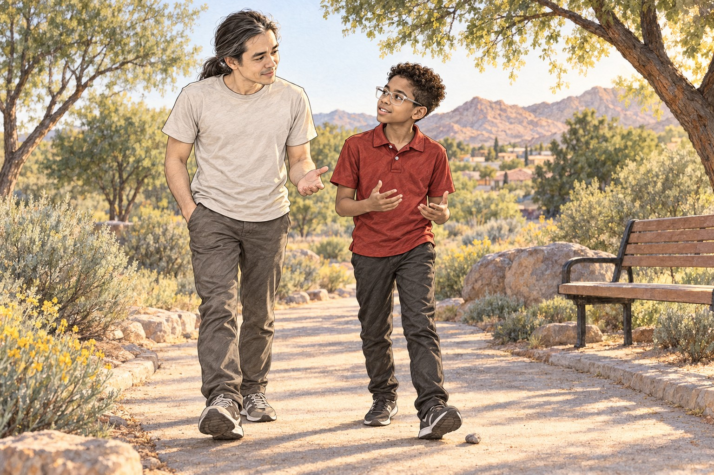
That evening, after everyone returned to the motorhome, Mama brought out the family agreement from their first camping trip.
It was wrinkled and had a chocolate stain.
"Remember this?"
Izzy examined it.
"Who spilled chocolate?"
"Not the important question."
They reread the rules.
Then added something new.
Everyone needs space. Space doesn't mean rejection.
They agreed that asking for privacy would not be treated as an insult. Anyone going off alone would tell the adults where they were going and stay within the agreed safe area.
They would make regular visits to libraries, pools, gyms, parks, and other places where everyone could spread out.
They would share the household work more deliberately.
Papa agreed to schedule repairs separately from school time whenever possible.
Mama agreed that some lessons could be rearranged if everyone was having a difficult morning.
The children agreed to help more with cleaning and meal preparation.
And Ruth asked for one additional rule.
"If someone's wearing headphones and reading, don't ask them what they're reading every thirty seconds."
Izzy considered this.
"What about every minute?"
"IZZY!"
He grinned.
The argument hadn't been pleasant.
Nobody pretended otherwise.
But they had discovered that even a giant RV could feel too small when everyone needed something different.
Sometimes the solution wasn't a bigger vehicle.
Sometimes it was a library card, a basketball court, a walk, or a little more understanding.
Chapter 10: The Desert Radio Station
The desert surprised everyone.
At first, Izzy thought it looked empty.
There were rocks.
Sand.
Shrubs.
More rocks.
Occasional cactuses.
And a great deal of sky.
"There's nothing here," he announced.
A park interpreter smiled.
"Come back after sunset."
So they did.
At dusk, the desert changed.
The sky turned orange and purple.
Long shadows stretched across the ground.
Birds and small animals emerged as the temperature cooled.
With guidance, they learned to watch from a distance, protecting both themselves and the wildlife.
Then the stars appeared.
Hundreds.
Thousands.
More than anyone could count.
Ruth stood beside her tripod, adjusting her camera.
Papa helped her experiment with shutter speed and exposure.
Raph lay on a blanket looking upward.
Izzy pointed at a bright planet.
"Is that Mars?"
Papa checked a sky map on his phone.
"Not tonight."
"Could we drive there?"
"Still no."
"Even in the Class A?"
"Especially not in the Class A."
Mama laughed.
That evening, they decided to record a special episode of RRIPM Radio.
Ruth set up the microphone.
Raph prepared the sports report.
Izzy created a new theme song on his guitar.
It contained three chords, a dramatic pause, and a sound that resembled a goose falling down stairs.
"Perfect," said Papa.
"Terrible," said Ruth.
"Memorable," said Mama.
They began recording.
"Good evening," Ruth said in her most professional voice. "This is RRIPM Radio, broadcasting from the desert."
"Tonight's sports news," Raph continued, "features the greatest soccer team in the history of civilization."
Izzy interrupted.
"Wrong team!"
"You don't even know what team I'm talking about!"
"I know enough!"
Papa rang a small camping bell.
"Penalty for unnecessary arguing."
"That's not a real penalty," Raph protested.
"New RRIPM regulations."
Mama introduced the next segment.
"Tonight we're interviewing our special guest, Papa Beep, about what we've learned from travelling."
Ruth held the microphone toward him.
"Papa, what's the most important thing you've discovered?"
He thought about it.
"That there are approximately seventeen different ways for a drawer to break."
"Besides that?"
"That I don't always have to fix everything immediately."
Mama smiled.
"Interesting."
"Very interesting," Ruth agreed.
"Suspiciously interesting," said Izzy.
Papa continued.
"At home, I sometimes feel like there's always something I should be doing. Another repair. Another unfinished project. Another job on the list."
He looked up at the stars.
"I still have those feelings out here. Sometimes I spend half the day worrying about what's next instead of enjoying where we are."
Nobody joked.
Then Mama asked, "And what helps?"
Papa considered his answer.
"Sometimes it's going for a walk. Or playing soccer with you guys. Sometimes I need to finish a small task so it's not hanging over me. And sometimes I need to decide that something can wait."
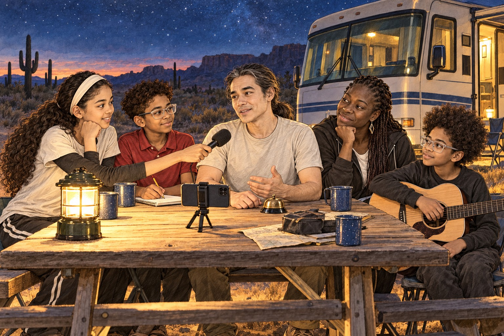
Ruth lowered the microphone slightly.
"That's actually a pretty good answer."
"Thank you."
"For Papa."
"Ah."
The interview continued.
Mama talked about how much she enjoyed spending time with the children without constantly driving them between activities. She also admitted that organizing meals and learning every day was more work than she'd expected.
Ruth talked about missing her friends and wanting challenges that belonged just to her.
Raph talked about discovering that soccer was a language he could share with people even when they didn't speak English or French.
Izzy talked about missing hockey.
He described the feeling of standing in goal while a player approached with the puck.
"The whole world gets really small," he said. "It's just the puck and the player and me."
"Do you miss that?" Mama asked.
"Yeah."
Then he looked around.
"But I like this too."
The recording ended with everyone saying goodnight.
Afterward, they lay on blankets and watched for shooting stars.
Nobody spoke for a while.
They didn't need to.
The next morning, Papa and Mama reviewed the next part of their journey.
They had enjoyed the Class A.
The extra space had been wonderful.
But the larger vehicle was expensive, complicated to manoeuvre, and unsuitable for some of the smaller roads they wanted to explore.
It was time to return it.
Their Class C was waiting.
And beyond the next stretch of American roads lay Mexico.
Mama looked at the map.
"Are we ready?"
Raph nodded.
Ruth smiled.
Izzy raised his guitar.
Papa checked the weather and their travel documents.
"Ready enough."
Which, they had discovered, was sometimes the best kind of ready.
Chapter 11: South of Everything Familiar
Crossing into Mexico felt different from crossing a provincial border.
The family had prepared carefully.
They had checked passports, vehicle documents, insurance, permits, and the requirements for travelling farther south.
They had researched places to stay, safe driving routes, and the procedures for crossing borders with a motorhome.
Even with all their preparation, Papa looked unusually serious.
"Are you nervous?" Ruth asked.
"A little."
"Why?"
"Because there are things I don't know."
Mama smiled.
"That's what makes it an adventure."
"That's also what makes it a planning exercise."
Once the paperwork was complete and they were on their way, the landscape began changing.
They travelled through northern Mexico, taking their time and stopping in towns and cities that offered places to explore.
Spanish appeared on road signs, menus, advertisements, and storefronts.
Raph began collecting useful words in his notebook.
Hola.
Gracias.
Por favor.
¿Dónde está...?
Izzy wanted to know how to say "goalkeeper."
"Portero," Raph replied after looking it up.
"And soccer ball?"
"Balón de fútbol."
"And 'your team is terrible'?"
Mama raised an eyebrow.
"Perhaps we should concentrate on polite conversations first."
Their first memorable soccer match took place in a public park.
Raph noticed several children playing near a basketball court.
He watched for a while.
Then he approached with his ball.
"¿Quieren jugar?" he asked.
Would you like to play?
One of the boys smiled.
"¡Sí!"
Within minutes, they had a game.
The teams changed constantly.
Ruth joined.
Izzy volunteered to play goalkeeper, then changed his mind and became a striker.
Papa took photographs from the sidelines.
Mama chatted with a parent who spoke some English while she practised her own Spanish.
The game was wonderful.
It was also chaotic.
Nobody agreed on the score.
Raph tried to explain a complicated offside situation.
Nobody seemed particularly interested.
Izzy scored a goal and celebrated so dramatically that he tripped over his own feet.
Everyone laughed.
Afterward, the children sat together drinking water.
One boy, Mateo, showed Raph a photograph of his favourite professional soccer team.
Raph immediately recognized the players.
An intense discussion followed.
The two boys used Spanish, English, hand gestures, and drawings in the dirt.
At one point, Mateo drew a soccer field.
Raph drew arrows showing a passing formation.
Izzy added a goalkeeper with arms approximately three metres long.
"Very realistic," Ruth commented.
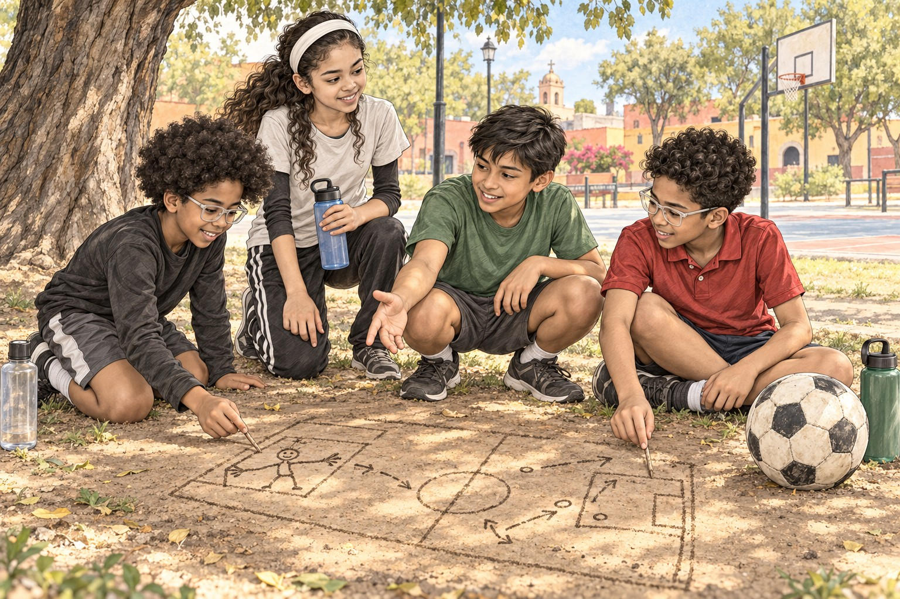
Before leaving, they exchanged greetings and took a group photograph with everyone's permission.
That evening, Raph wrote in his journal.
I didn't know all the words, but I still made friends.
He paused.
Then used dictation on his tablet to explain the match in more detail.
Listening back to his own description, he realized he'd explained almost everything he wanted to say.
The tools weren't doing the thinking for him.
They were helping him put his thinking into words.
Across the motorhome, Ruth was writing a different story.
She had noticed an elderly woman painting flowers on a small ceramic tile in a market.
The woman had explained her process while Ruth watched.
Ruth had asked permission to photograph the artwork.
Now she was sketching her own design, inspired by the colours she'd seen.
Izzy was building a Lego marketplace.
He had created a fruit stand, a bicycle shop, and a soccer stadium.
"Why is there a stadium in the middle of the market?" Papa asked.
"Community planning."
"Does the community want a stadium there?"
"The community voted."
"Who voted?"
"Me."
Mama looked over the day's photographs.
There were streets, markets, mountains, colourful buildings, children playing, and five familiar faces.
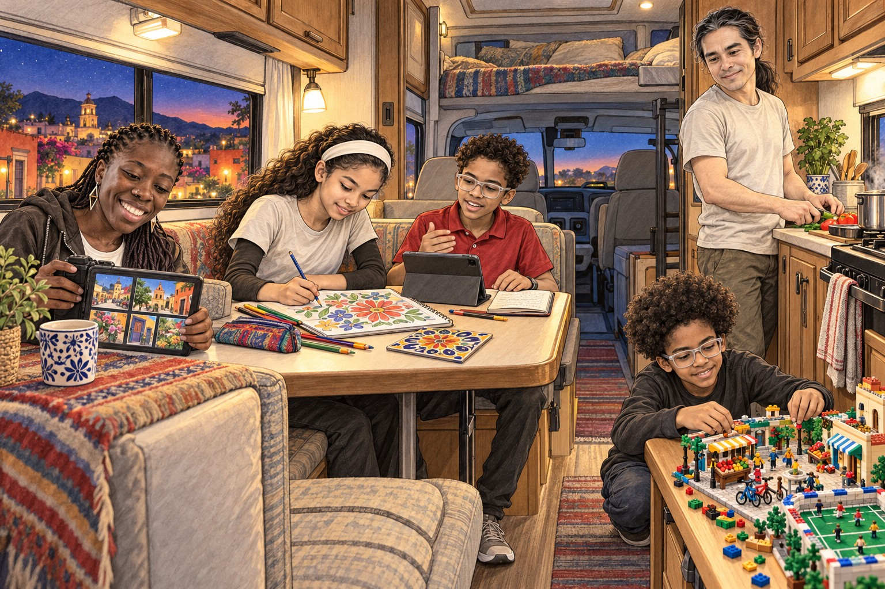
The family had travelled thousands of kilometres.
Their world was becoming larger.
And somehow, in certain moments, it was also becoming smaller.
A soccer ball could start a conversation.
A drawing could explain an idea.
A smile could say something that words hadn't quite managed.
That night, they listened to Spanish music while preparing supper.
Papa attempted to sing along.
His pronunciation was questionable.
Izzy begged him to stop.
Raph corrected several words.
Ruth started filming.
Mama laughed.
And the Class C motorhome, parked beneath a sky full of unfamiliar stars, sounded exactly like home.
Chapter 12: The School That Travelled Everywhere
By January, the family had travelled through central Mexico.
They had explored colonial-era towns, visited museums, walked through busy markets, and learned about the country's extraordinary range of landscapes, languages, traditions, and histories.
One week, they visited a protected monarch butterfly habitat with a local guide.
The mountains were cool.
The forest smelled of pine needles.
The guide spoke softly as they approached an area where thousands of butterflies rested among the trees.
At first, Izzy couldn't see them.
"Where are they?"
"Look closely," Mama whispered.
Then the sunlight shifted.
A branch seemed to move.
Orange and black wings opened.
Hundreds of butterflies fluttered.
Izzy stared.
"Whoa."
Ruth raised her camera, keeping a respectful distance.
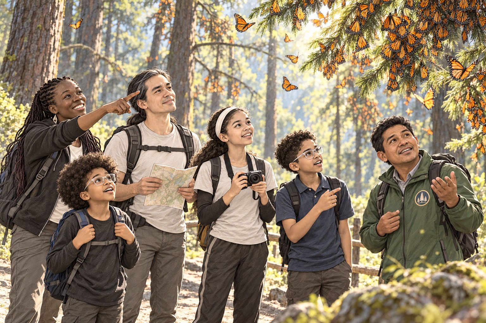
Raph looked up at the trees.
"How far do they migrate?"
Their guide explained that many monarchs had travelled thousands of kilometres from Canada and the United States to reach these mountains.
Papa pulled out their map later and traced part of the butterflies' migration route.
"Look," he said. "They travelled through some of the same regions we did."
"Without a camper," Izzy added.
"Without a Class C."
"Without pancakes."
"Possibly their greatest disadvantage."
The children spent the afternoon learning about migration, weather, habitat protection, and how changes in land use could affect species across an entire continent.
Ruth wrote a short essay about the butterflies.
Raph recorded an audio explanation and then worked with Mama to turn it into paragraphs.
Izzy drew a butterfly wearing a tiny backpack.
"What's in the backpack?" asked Papa.
"Emergency nectar."
Nobody argued with this.
Farther south, they explored historic sites with knowledgeable local guides, including ancient Maya cities on the Yucatán Peninsula.
They learned about architecture, astronomy, mathematics, language, and the continuing lives and cultures of Maya communities.
Papa was fascinated by how buildings were constructed and aligned.
Ruth studied decorative patterns and sketched details.
Raph wanted to know whether ancient civilizations had played ball games.
Their guide explained that different Mesoamerican societies had developed important ceremonial ball games, with rules and meanings quite different from modern soccer.
This fascinated Raph.
He asked so many questions that the guide finally smiled.
"Maybe you should become a historian of sports."
Raph looked delighted.
Izzy wanted to know whether goalkeepers had existed.
"Not exactly as you know them," the guide explained.
"Probably because they hadn't invented goalie pads."
Papa gave him a look.
"What? I'm just saying."
Their homeschooling routine had changed throughout the journey.
Some mornings began with books and mathematics.
Other days began with a museum, a hike, a conversation, or an experiment.
They still studied reading, writing, science, history, geography, and mathematics.
But their assignments often grew out of the places they visited.
At a market, Izzy calculated change in pesos.
At a campground, Raph measured distances and created a scale drawing of their campsite.
Ruth wrote travel articles and experimented with photography and film editing.
Papa taught practical engineering through safe, supervised projects.
Mama helped connect what they experienced to larger questions about culture, language, communities, and the natural world.
Not every school day worked.
Some mornings, Izzy couldn't concentrate.
He would begin a problem, notice something outside, return to the problem, and then suddenly remember a Lego idea.
Sometimes Raph became frustrated when reading took longer than expected.
Sometimes Ruth wanted to work independently and became irritated by interruptions.
And sometimes Mama found herself wondering whether she was doing enough.
One afternoon, while the family was staying in a small rented house near Mérida, Mama looked at the unfinished assignments spread across the table.
"I don't think we accomplished much today."
Papa looked around.
Ruth had spent the morning making a short documentary about the local market.
Raph had worked through a difficult maths problem and explained a historic ball game.
Izzy had built a working model of a drawbridge using Lego gears.
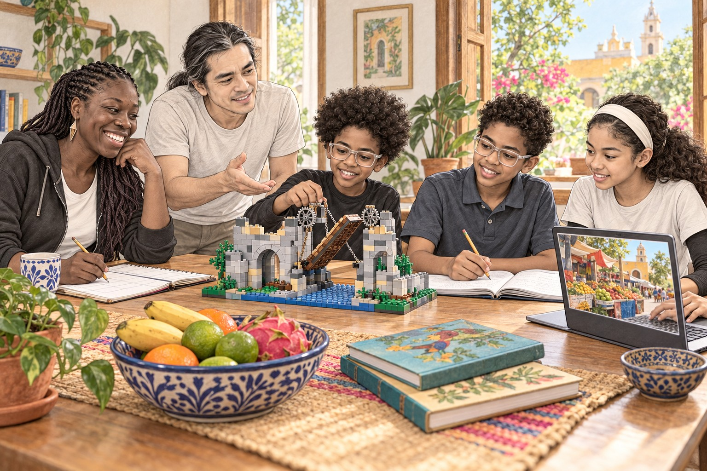
And all three children had practised Spanish while buying fruit with Mama.
"That seems like quite a lot," Papa said.
"But we didn't finish the schedule."
"Maybe the schedule wasn't quite right for today."
Mama thought about that.
That evening, they held a family meeting.
They decided to keep a few dependable school routines but allow greater flexibility.
The children would have clear daily goals.
They could choose whether certain assignments were completed through writing, speaking, drawing, recording, or building when those methods suited the learning objective.
There would be breaks for movement.
There would be independent work time.
And there would be days when a field trip became the main lesson.
Raph suggested adding soccer to the official curriculum.
"Physical education," he explained.
Izzy suggested hockey.
"Also physical education."
Ruth suggested running.
"Definitely physical education."
Papa suggested woodworking.
"Practical technology."
Mama suggested cooking.
"Mathematics, science, and life skills."
Izzy looked impressed.
"So basically everything is school?"
Mama smiled.
"Not everything has to be school. You're also allowed to simply enjoy being kids."
This might have been the most popular lesson of the year.
Chapter 13: The Boat Without Walls
Belize was where the road trip temporarily became something else.
The family had reached the Caribbean coast after weeks of travelling through Mexico and exploring the Yucatán Peninsula.
They had seen incredible beaches, underground rivers, mangrove forests, and colourful towns.
But now they were preparing for a completely different experience.
Three weeks aboard a sailboat.
Papa had arranged a charter with an experienced captain who knew the local waters.
The family would help with simple sailing tasks, learn about navigation, and explore sheltered parts of the Belizean coast and nearby islands when weather and conditions allowed.
Their Class C was staying safely in storage.
Their travelling home was about to float.
The sailboat was beautiful.
It had white sails, a shaded cockpit, a compact galley, sleeping cabins, and a deck that seemed enormous until everyone tried to stand in the same place.
Izzy climbed aboard.
"Where's the engine?"
"It has one," Papa explained. "But we can also travel using the wind."
"Without fuel?"
"Mostly, while we're sailing."
"Can we sail to Canada?"
"Not on this trip."
"What about Antarctica?"
"Absolutely not."
"You're very negative about my ideas."
Their captain, Elena, greeted them warmly.
Before leaving the harbour, she explained the safety procedures.
Everyone learned where the life jackets were stored, how to move safely on deck, what to do if someone fell overboard, and which tasks required adult supervision.
Izzy examined the ropes.
"That's a lot of string."
"Lines," Elena corrected gently.
"That's a lot of lines."
"Yes."
"Do they all do something?"
"Every one."
Izzy looked impressed.
"Even that one?"
"Especially that one."
The first time the sails filled with wind, the boat leaned slightly.
Raph grabbed the side of his seat.
"Is it supposed to do that?"
"Yes," Elena answered.
"Are you sure?"
"Very."
Izzy grinned.
"We're tipping!"
"We're sailing," Papa corrected.
The water stretched blue and green around them.
Small islands appeared on the horizon.
Pelicans glided overhead.
For the first time in months, nobody could ask Papa how many kilometres remained before the next campground.
They weren't following a road.
They were following wind, charts, safe channels, and weather.
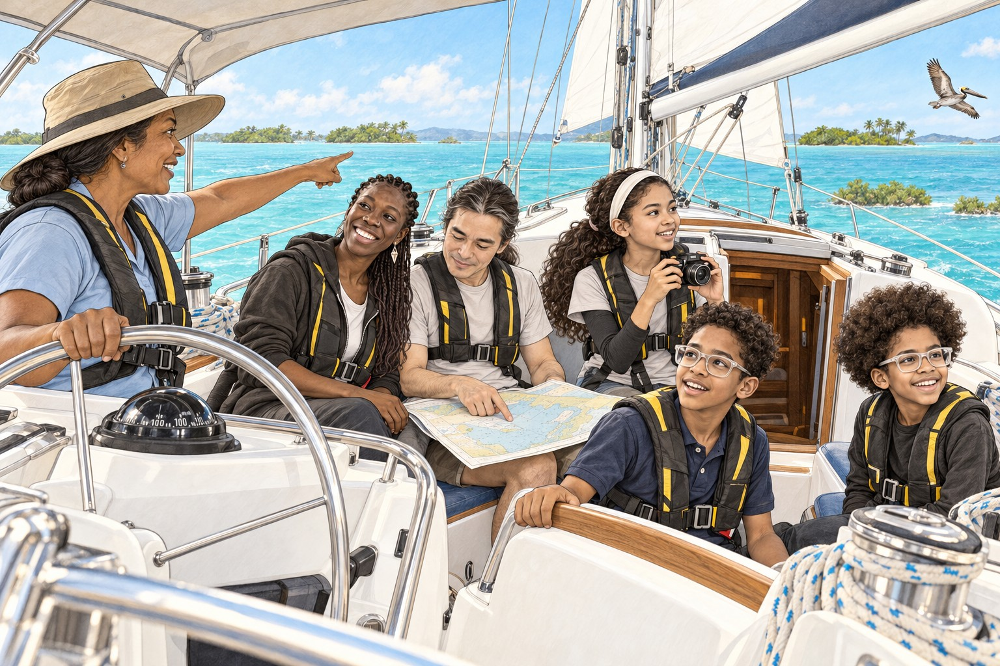
Their homeschooling changed again.
Elena taught them basic navigation.
They learned how to read nautical charts and understand water depth.
Papa explained how sails produced forces that helped move the boat.
Raph used angles to estimate directions.
Ruth kept a written and photographic log.
Izzy drew a sailboat with a built-in soccer field.
"Where would the ball go if you missed?" Mama asked.
"In the ocean."
"Then perhaps that's not the best design."
One afternoon, they anchored in a sheltered area and joined a guided snorkeling excursion.
Beneath the surface, the ocean became an entirely new world.
Fish moved through coral formations.
Sea fans swayed gently.
Sunlight made shifting patterns across the water.
Ruth floated quietly, watching.
Raph pointed toward a school of small fish moving together.
Izzy was so excited that he forgot he couldn't talk through his snorkel.
"BLOOB! BLOOB! BLOOB!"
Papa gave him a thumbs-up.
Mama stayed close, enjoying the moment while keeping an eye on everyone.
They followed their guide's instructions to avoid touching coral or disturbing animals.
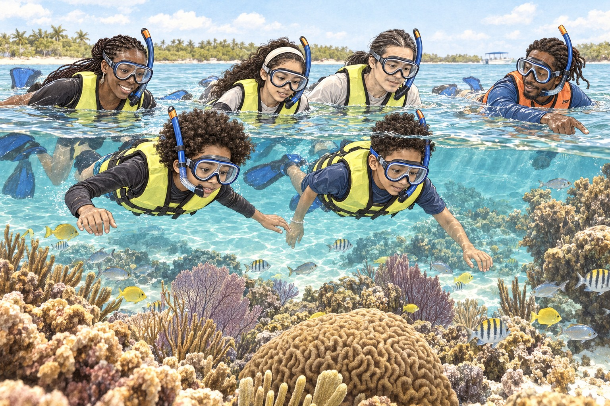
That evening, the family sat in the cockpit watching the sunset.
The sea was calm.
The sky seemed enormous.
Mama prepared a simple supper.
Papa checked photographs.
Raph and Izzy played a card game.
Ruth wrote in her notebook.
Then Izzy looked around.
"Hey."
"What?" asked Raph.
"This boat is smaller than the Class A."
"Everything is smaller than the Class A."
"But it feels bigger."
Ruth looked up.
"That's because there's no ceiling outside."
Izzy thought about that.
"And there's ocean everywhere."
Papa smiled.
"Different kinds of space."
That night, they lay in their cabins while small waves rocked the boat.
The gentle movement made Izzy sleepy.
Raph read along with an audiobook on his device.
Ruth listened to music through her headphones.
Mama and Papa sat on deck a little longer.
For once, there was nothing to drive.
Nothing to repair immediately.
Nothing to organize for the following morning beyond the weather and the day's sailing plan.
Papa leaned back.
"I could get used to this."
Mama smiled.
"Let's see what you say after three weeks."
Chapter 14: The Storm and the Five Anchors
By the second week, everyone had learned something about boats.
Ruth had learned that the best place to read was sometimes the shaded cockpit.
Raph had learned that sailing involved more mathematics than he expected.
Izzy had learned that salt water made his hair look ridiculous.
Papa had learned that boat maintenance could be even more complicated than camper maintenance.
Mama had learned that cooking while the boat moved required excellent balance.
And everyone had learned that privacy was a precious resource.
One afternoon, Izzy was looking for his guitar.
Raph was trying to practise a piano piece on a small keyboard using headphones.
Ruth was editing a video.
Papa was checking a camera battery.
Mama was preparing lunch.
The boat rocked.
A cup slid across the table.
Izzy reached to catch it.
His guitar case bumped Ruth.
Ruth's elbow hit Papa.
Papa dropped the battery.
The battery landed safely in a bag, but the noise startled Raph.
He hit several wrong notes.
"CAN EVERYBODY PLEASE STOP MOVING?" he shouted.
Everyone froze.
Then the boat rocked again.
"Tell the ocean," Papa said.
Nobody laughed.
Raph put down his headphones.
"I can't concentrate."
"Neither can I," Ruth answered.
"I wasn't talking to you."
"Well, you're talking loudly enough for everybody."
Izzy began playing his guitar.
Raph stared at him.
"Seriously?"
"What?"
"Can you not?"
Izzy stopped.
Mama closed her eyes.
"We're doing this again."
The old frustrations had returned.
Different home.
Same family.
Later, the weather forecast indicated strengthening winds and unsettled conditions.
Elena decided they should return to a protected harbour before the weather deteriorated.
Everyone helped with appropriate preparations under her direction.
The children secured their belongings.
The adults checked the cabins.
The boat reached shelter safely, and Elena made sure it was properly secured before the stronger weather arrived.
By evening, rain was falling hard.
Wind whistled through the rigging.
The family sat below deck.
For a while, the sound was exciting.
Then it became tiring.
Izzy couldn't sleep.
Raph was annoyed because his book had become damp.
Ruth wanted to finish her video.
Papa kept checking the weather.
Mama finally said, "Can you stop checking your phone every two minutes?"
Papa looked up.
"I'm just making sure—"
"Elena has everything under control."
"I know."
"Then come sit with us."
He put down his phone.
For a while, they listened to the rain.
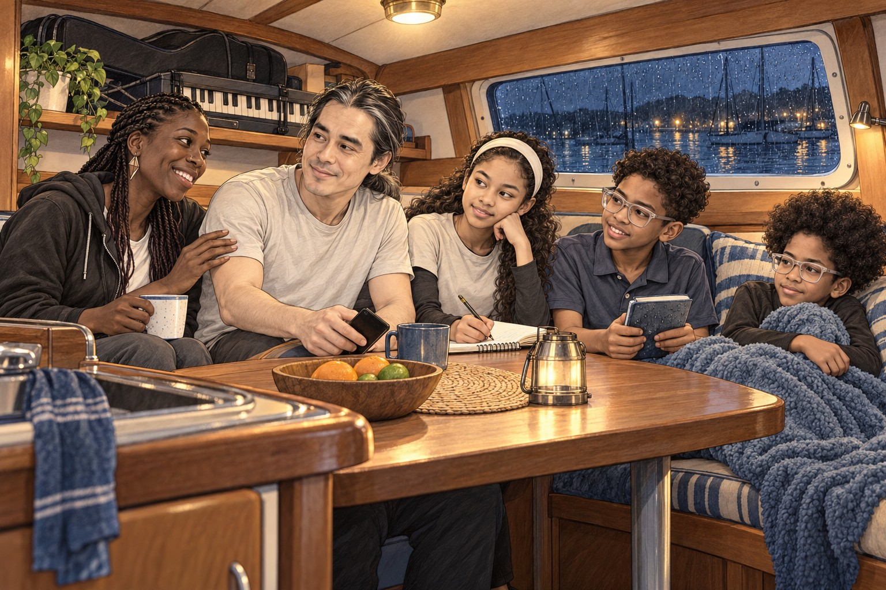
Then Ruth asked a question.
"Why do we keep doing this?"
Mama looked at her.
"Doing what?"
"Changing homes. Travelling. Packing. Unpacking. Finding places to sleep. Figuring out where to do school."
Nobody answered immediately.
Ruth continued.
"I like it. But sometimes I'm tired of it."
Raph nodded.
"Me too."
Izzy looked down.
"I miss my room."
Papa leaned forward.
"That's fair."
"And my friends," Izzy added.
"And my team," said Raph.
"And my own bathroom," Ruth said.
"Definitely the bathroom," Papa agreed.
Mama smiled sadly.
"I miss being able to make plans without looking at a weather forecast or a map."
Papa looked around the little cabin.
"Sometimes I wonder whether we've made everything too complicated."
That was difficult to admit.
The trip had been his dream too.
He had wanted adventure, learning, time together, and freedom from the routine that sometimes made ordinary weeks feel overwhelming.
But here they were, exhausted and arguing in another tiny space.
Mama reached for his hand.
"Maybe the problem isn't travelling."
"What is it then?"
"Maybe we're expecting ourselves to enjoy it all the time."
Ruth considered that.
"That would be impossible."
"Exactly."
Outside, rain struck the deck.
Inside, nobody spoke for a while.
Then Raph said, "I think we need five anchors."
Izzy looked up.
"Five?"
"One for each person."
"That's a lot of anchors."
"Not real anchors."
Raph reached for his notebook.
He drew five circles.
"Things that help each of us feel okay."
Ruth leaned closer.
"For me, it's quiet time. Running. Writing. Talking to someone without everybody listening."
Izzy added, "Building Lego. Hockey. Being with Mama. Sometimes being with Papa."
"Sometimes?" Papa asked.
"Depends what we're doing."
"Fair enough."
Raph wrote down soccer, music, reading tools, and having time to finish something without being rushed.
Mama chose walks, conversations, reading, a little time alone, and shared responsibility for the everyday work.
Papa chose building things, photography, exercise, and having realistic plans rather than endless lists.
They studied their drawing.
Five circles.
Five people.
Different needs.
Then Izzy drew a line connecting them.
"What's that?" Ruth asked.
"The boat."
"The boat?"
"Well, we can't all just float away separately."
Raph laughed.
"That's not how anchors work."
"I know."
Izzy continued drawing.
"This means we can have our own space and still come back."
Mama looked at the page.
"That's a pretty good idea."
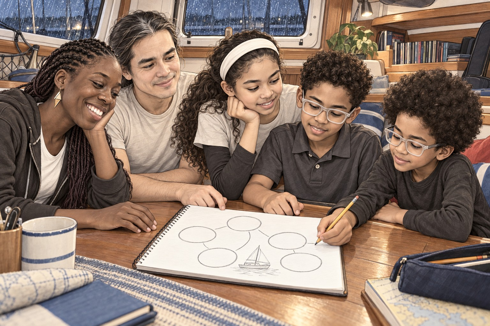
They decided that when someone was overwhelmed, they could say, "I need my anchor."
It would mean they needed one of the things that helped them settle.
Sometimes that meant going outside.
Sometimes reading.
Sometimes exercise.
Sometimes building.
Sometimes talking.
And sometimes simply being left alone for a while.
The next morning, the weather improved.
They went ashore and spent part of the day apart in pairs and small groups.
Ruth and Mama visited a quiet café where Ruth wrote while Mama read.
Raph and Papa found a place to practise soccer and later worked together on some mathematics.
Izzy spent time drawing boats, then joined everyone for a swim at a supervised swimming area.
In the afternoon, they reunited.
Nobody had experienced anything extraordinary.
No giant waterfall.
No rare animal.
No spectacular discovery.
But everyone felt better.
That evening, back aboard the sailboat, Izzy announced a new RRIPM Radio episode.
"Today," he said, "we're discussing the world's most important invention."
"The sail?" asked Papa.
"The compass?" asked Raph.
"The anchor?" suggested Ruth.
Izzy shook his head.
"Headphones."
Everyone laughed.
Even Raph.
Especially Raph.
Chapter 15: The Road That Changed Us
After three weeks, the family returned to their Class C motorhome.
It felt enormous.
"Look at this floor!" Izzy shouted.
"Yes," said Ruth.
"We can walk!"
"An extraordinary development."
They thanked Elena for the sailing experience and collected their stored belongings.
The Lego astronaut was located immediately.
This time, it was inside a shoe.
They continued into Guatemala.
The landscape changed again.
They explored towns surrounded by mountains, visited markets, and learned about the country's languages and living Indigenous cultures.
Near Lake Atitlán, they stayed in a small rental for a while, giving everyone room to spread out.
From their windows, they could see the lake and distant volcanoes.
Ruth began running along safe local routes with Mama.
Raph found a community soccer activity where visitors were welcome.
Izzy became fascinated by the small boats crossing the lake.
Papa spent time photographing the changing light over the water.
Mama enjoyed mornings when she could make breakfast without rearranging half a motorhome.
The rental had three bedrooms.
For the first time in months, each child could close a door.
On the first morning, nobody wanted to leave.
"Are we still adventurers if we stay inside?" Izzy asked.
"Absolutely," Mama replied.
"Even if we watch a movie?"
"Yes."
"Even two movies?"
Papa raised an eyebrow.
"Let's not get carried away."
They spent a rainy afternoon building a Lego city on the floor.
Not just the children.
All five participated.
Raph constructed a soccer stadium.
Izzy designed roads and a working bridge.
Ruth built a park with walking and running trails.
Mama created a marketplace.
Papa designed an electrical system for tiny streetlights using a safe, low-voltage battery setup.
By evening, the city had a school, a library, a recreation centre, a soccer field, several houses, and a tiny radio station.
Izzy placed a minifigure on top of the building.
"RRIPM headquarters!"
"Where's the parking?" Papa asked.
Izzy looked offended.
"It's a walkable city."
Ruth smiled.
"Excellent urban planning."
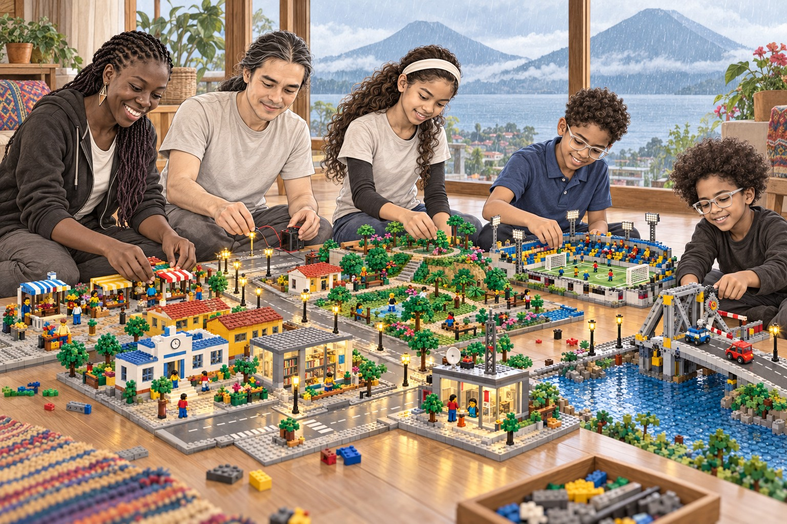
A few days later, they attended a community cultural event and listened to local musicians, watched performances, and learned from people who chose to share their traditions with visitors.
Raph noticed the different rhythms.
He tapped along quietly.
Mama encouraged him to record his impressions in his music notebook.
Ruth studied the colours and movement of the performances.
Izzy wanted to know how one of the percussion instruments worked.
Papa noticed the way the wooden instrument had been constructed.
All five had watched the same event.
Each had noticed something different.
And that was becoming one of their favourite things about travelling together.
They continued south through Central America, crossing borders with their documents and vehicle arrangements carefully checked.
The journey took them through Honduras and Nicaragua, then into Costa Rica.
There were difficult driving days.
There were delays.
There were roads that made Papa wish he had installed better cup holders.
There were occasional disagreements about food, music, and how long to stay somewhere.
But there were also extraordinary experiences.
In Costa Rica, they explored forests with a naturalist guide.
They spotted monkeys moving through the canopy.
They watched colourful birds and learned how different species depended on the rainforest.
Ruth photographed insects and leaves.
Raph learned how to identify patterns in animal calls.
Izzy became determined to find a sloth.
They eventually saw one high in a tree.
It barely moved.
Izzy stared upward.
"That's it?"
"That's it," the guide replied.
"It's not doing anything."
"It's resting."
"For how long?"
"Quite a while."
Izzy thought about that.
"Papa, I think you should study sloths."
"Why?"
"They're really good at not working."
Papa laughed.
"An important skill."
Later, they kayaked with a guide through calm waterways bordered by mangroves.
They learned about root systems, tides, and the importance of coastal habitats.
The family moved quietly through the water.
Everyone wore appropriate safety equipment.
Ruth paddled with strong, steady strokes.
Raph focused on keeping a straight course.
Izzy wanted to race.
Mama reminded him that a wildlife tour was not the Olympic Games.
Papa stopped occasionally to take pictures.
At one point, the guide asked everyone to be silent.
They drifted beneath the trees.
Water lapped gently against the kayaks.
A bird called.
Somewhere farther away, something splashed.
For a moment, nobody wanted to be anywhere else.
By March, they had reached Panama.
They stood looking out toward the Pacific Ocean after travelling thousands of kilometres from home.
Ruth opened the original map.
The five blue stars were still beside Ottawa.
But the map was now covered with lines, circles, and notes.
There were places they had visited.
Places they had skipped.
Places they might return to someday.
Raph studied the distance.
"That's a long way from home."
"Yes," said Papa.
Izzy looked toward the water.
"Are we going farther?"
Mama shook her head.
"Not this time."
It was time to begin the journey north.
Ruth looked at the map again.
"Does that mean the adventure is nearly over?"
Papa smiled.
"Not exactly."
He pointed toward the long route home.
"We still have to get back."
Izzy grinned.
"Another road trip!"
Raph groaned.
"More driving?"
Mama laughed.
"Yes. But we've learned that we don't have to do it all at once."
And so, after months of travelling south, the family turned toward home.
Chapter 16: The Last Thousand Miles
The journey north felt different.
They no longer needed to prove that they could travel far.
They already had.
They no longer needed to visit every famous attraction.
They had learned that a quiet afternoon beside an ordinary river could be just as memorable as a spectacular national park.
They no longer believed that a successful day required everybody to be happy from breakfast until bedtime.
That had never happened anyway.
They travelled north through Central America and Mexico, revisiting a few favourite places and discovering others along the way.
Some days were filled with hikes, bike rides, soccer games, and sightseeing.
Other days were deliberately ordinary.
Laundry.
Groceries.
Schoolwork.
Cleaning.
Reading.
Cooking.
Watching movies.
And sometimes doing absolutely nothing particularly exciting.
The children continued their studies.
Ruth worked on a collection of stories and photographs from the year.
Raph prepared an audio-and-visual presentation about the different ways people played sports around the world.
Izzy built a Lego model of their journey.
It included the Class B camper, the Class C, the Class A, and the sailboat.
It also included a mountain, a volcano, a soccer stadium, a hockey rink, a monkey, a butterfly, and a suspiciously large pancake restaurant.
Papa looked at the model.
"Where's the Class B?"
"Beside the mountain."
"The Class C?"
"Near the ocean."
"The Class A?"
"Beside the desert."
"And the sailboat?"
"In the swimming pool."
Papa stared at him.
"Why is there a swimming pool?"
Izzy grinned.
"Because you wouldn't let me put one on the roof."
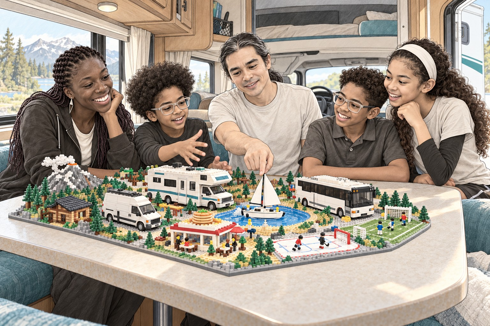
As they approached the United States again, the family began talking more about home.
Ruth wondered how much her friends had changed.
Raph wanted to return to regular soccer practices.
Izzy missed skating and playing hockey with his teammates.
Mama was looking forward to familiar routines.
Papa was looking forward to having a workshop again.
"But not the unfinished projects," Ruth teased.
"Especially the unfinished projects," Papa replied.
One evening, they stopped at a campground beside a quiet river.
The weather was warm.
The children were playing outside.
Mama sat beside Papa.
"Do you think it worked?" she asked.
"What?"
"The trip."
Papa watched the kids.
Ruth was timing a short sprint.
Raph was explaining a soccer drill.
Izzy was attempting to combine the drill with an imaginary hockey save.
"Depends what we were trying to accomplish."
Mama considered that.
"We wanted to spend more time together."
"We did."
"We wanted the kids to learn."
"They learned plenty."
"We wanted adventures."
"We definitely had those."
"We wanted things to be less stressful."
Papa laughed.
"That part needs further research."
Mama smiled.
"Maybe."
They watched the children for another minute.
Then Mama said, "I think we learned how different we all are."
Papa nodded.
"And how much space five people need."
"Even when they love each other."
"Especially then."
Ruth came over.
"What are you talking about?"
"The trip," Mama answered.
"Are you going to say something emotional?"
"Possibly."
"Should I get my camera?"
"Probably."
Ruth called her brothers over.
They decided to record one final RRIPM Radio episode before returning home.
They sat around the picnic table.
The microphone was placed in the middle.
Ruth pressed record.
"Welcome to RRIPM Radio. Today's question is simple: What was the best part of the year?"
Raph answered first.
"Playing soccer with kids in different countries."
Izzy shook his head.
"Wrong."
"There's no wrong answer!"
"My favourite was sailing."
Ruth smiled.
"Mine was making the movie. And some of the hikes."
Mama chose the quiet conversations, the unexpected friendships, and the times everyone had helped one another.
Papa thought for a long moment.
Then he said, "My favourite part was discovering that being together doesn't always mean doing the same thing."
Everyone looked at him.
He continued.
"Sometimes Ruth needs to run or write. Raph needs his soccer or music. Izzy needs to build something or move around. Mama needs time to read, walk, or just relax. Sometimes I need to build something, take photographs, or have a bit of quiet."
He smiled.
"But the best part is that we come back together afterward."
Izzy considered that.
"Like the five anchors."
"Exactly."
Raph looked at Ruth.
"Do you still have the drawing?"
"Of course."
She opened her travel notebook.
There it was.
Five circles connected by lines.
Their original drawing from the sailboat.
Ruth placed it beside the map with the five blue stars.
"Maybe that's what the movie should be about."
"What?" Mama asked.
"Not just where we went."
Ruth looked around at her family.
"How we learned to live together."
Nobody spoke for a moment.
Then Izzy leaned toward the microphone.
"And pancakes."
Everyone laughed.
"Yes," Ruth agreed. "And pancakes."
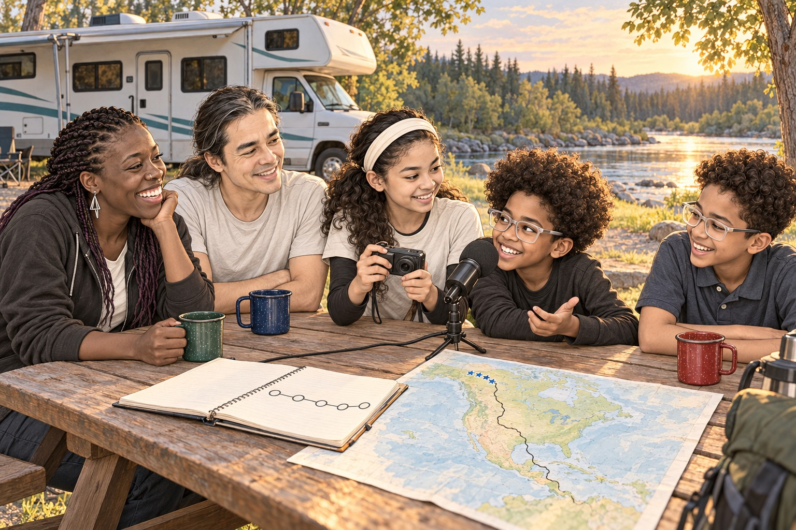
They returned to Canada in May, almost exactly one year after leaving.
The first familiar roads felt strange.
The buildings seemed both ordinary and extraordinary.
They passed places they had driven past hundreds of times before.
Yet everything looked a little different.
When they finally arrived home, everyone climbed out.
They stood in the driveway.
The house looked enormous.
Izzy ran inside.
He returned a moment later.
"GUYS!"
"What?" shouted Raph.
"WE HAVE STAIRS!"
Ruth laughed.
"We always had stairs!"
"I FORGOT HOW MANY!"
Mama stepped through the front door.
Papa carried a bag inside.
Raph headed toward his room.
Ruth looked down the hallway.
Izzy raced toward the basement to check on the Lego city.
For the first time in twelve months, everyone could go somewhere different without leaving the same house.
It felt wonderful.
It also felt a little strange.
That evening, the family ate supper around their regular dining table.
No one had to fold it down afterward.
No one had to turn it into a bed.
No one had to move a backpack to open a cupboard.
And nobody had to worry about driving anywhere the next morning.
After supper, the children disappeared into their rooms.
Papa and Mama sat quietly in the living room.
"Feels strange," Papa said.
"It does."
"Too quiet."
Mama smiled.
"Give them five minutes."
Three minutes later, Izzy shouted from the basement.
"WHO WANTS TO BUILD A LEGO CITY?"
Raph answered immediately.
"ME!"
Ruth called from upstairs.
"CAN I DESIGN THE PARK?"
Papa looked at Mama.
She smiled.
"There's your answer."
He stood.
"Coming!"
The adventure had ended.
But apparently, the family hadn't finished travelling.
They were already building another world.
Epilogue: The Fifth Home
Several weeks after returning home, Ruth finished editing their movie.
It contained mountains, beaches, deserts, forests, museums, cities, lakes, and oceans.
There were dolphins in the distance, butterflies in the trees, monkeys in the rainforest, and a very sleepy sloth.
There were bicycle rides, soccer games, hockey practices without ice, canoe trips, kayak adventures, swimming, hiking, running, and Lego constructions.
There were photographs of markets, historic buildings, wildlife, and people they had met along the way.
There were clips from RRIPM Radio.
There were sunsets from the Class B.
Rainy mornings in the Class C.
Movie nights in the Class A.
And stars above the sailboat.
But Ruth's favourite scenes were different.
Papa and Raph laughing during a soccer game.
Mama helping Izzy with a school project.
Raph showing Ruth a piano piece he had practised.
Izzy helping Papa repair a loose cabinet.
Ruth and Mama riding bicycles together.
All five of them sitting quietly beside a lake.
Those moments didn't always look spectacular.
But they felt important.
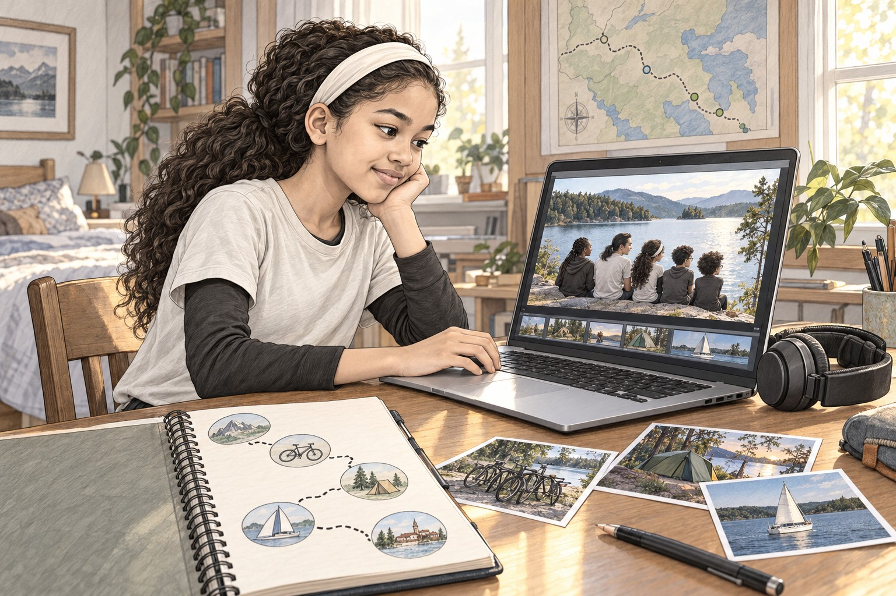
On the night of the family movie premiere, they invited a few friends over.
Adam came.
Wesley came.
There was popcorn.
There were blankets.
Izzy insisted on delivering a live introduction.
"Welcome to the greatest movie in the history of movies!"
Ruth rolled her eyes.
"Please don't."
"Featuring action!"
"Not really."
"Adventure!"
"Yes."
"Comedy!"
"Unfortunately."
"And one extremely talented hockey goalkeeper!"
Raph laughed.
"Here we go again."
The lights went down.
The movie began.
At the end, Ruth had placed a photograph of the five of them together beside the sailboat.
Underneath, she had written:
WE LEFT HOME TO SEE THE WORLD.
Then another sentence appeared.
WE DISCOVERED THAT HOME WAS SOMETHING WE COULD MAKE TOGETHER.
The screen faded to black.
For a moment, nobody spoke.
Then Izzy raised his hand.
"I have a question."
Papa sighed.
"What?"
"When are we going again?"
Raph laughed.
Mama looked at Papa.
Papa looked at the three children.
Then at the map still hanging on the wall.
Five little blue stars marked Ottawa.
A long, wandering line crossed a continent.
There were still so many places they hadn't visited.
So many roads.
So many waterways.
So many mountains.
So many stories.
Papa smiled.
"Well," he said, "what kind of camper should we build next?"
THE END